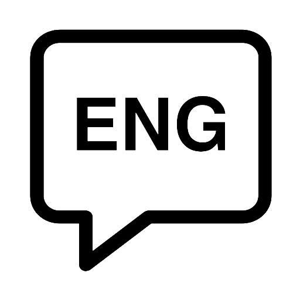
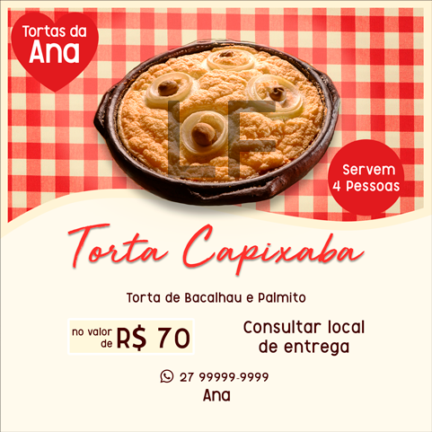
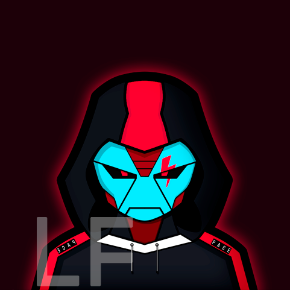
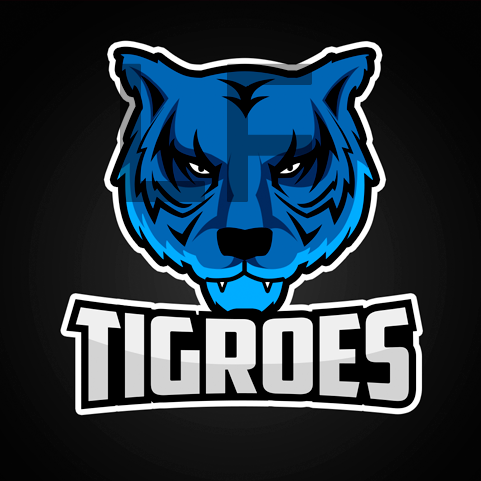
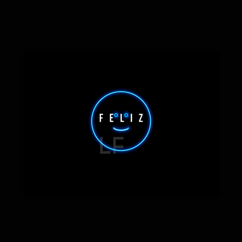
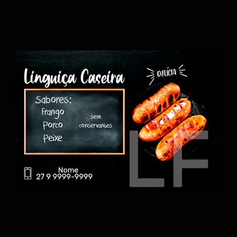
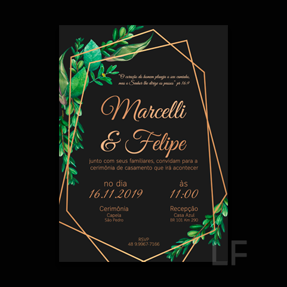

Luiz Felipe Gonçalves
Tenho 19 anos, sou estudante de Sistemas de Informação na Universidade Vila Velha e conheci a programação através do curso de Engenharia. Resultado: Tranquei o curso de Engenharia e fui fazer SI.


Hobbie e Acadêmico
Design
Desde que ganhei meu primeiro notebook sempre fui interessado em fazer artes para o meu canal no youtube. Assistindo vídeo-aulas consegui desenvolver algumas habilidades no Photoshop.

Língua Inglesa
Estudei 1,5 ano em uma escola de inglês o que me possibilitou um grande avanço na capacidade de entendimento, escrita e pronúncia. Cheguei a atingir um nível médio-alto na língua.
Acadêmico
Formado no Ensino Médio em 2017 pelo CE Casa do Estudante em Aracruz/ES. Em 2018 tive aula de c++ quando fazia o curso Engenharia Elétrica e atualmente graduando em SI pela UVV (início 2020/1).Alguns Projetos






deep#9300
luiz.felipegplvhff@gmail.com
Design By Luiz Felipe Gonçalves